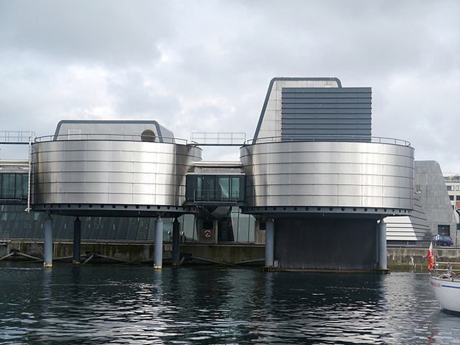
Seen from the water, Stavanger's Petroleum Museum looks like a small oil platform. Opened in 1999, the striking harbour landmark illuminates the history of off-shore petroleum activity and shows why Stavanger has been Norway's oil capital since drilling began in the North Sea in 1966.
Interesting that, while the UK has frittered away much of its oil revenue, Norway has consolidated its massive assets for the benefit of the Norwegian public.
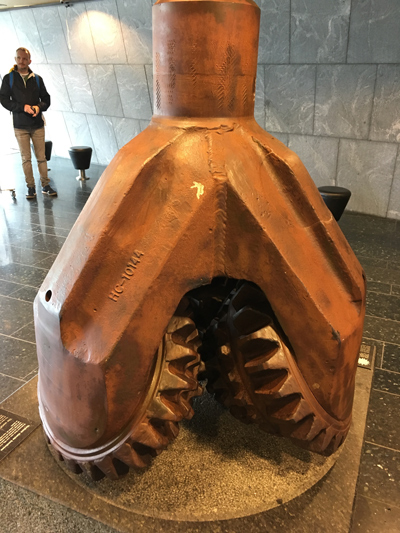
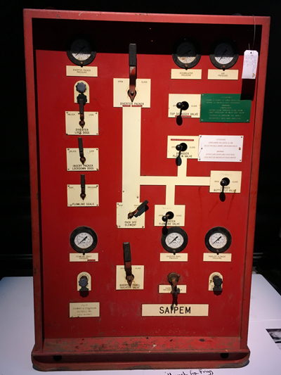
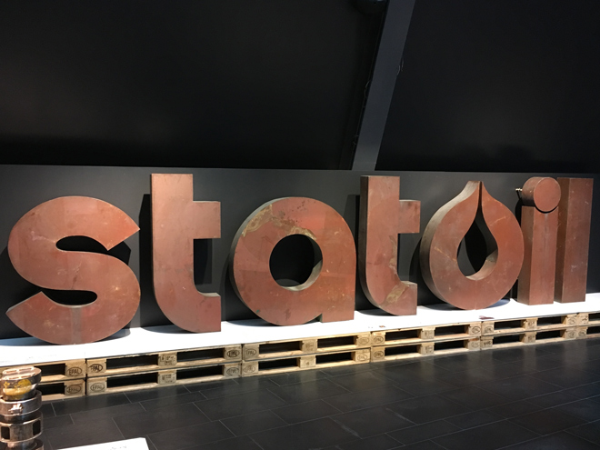
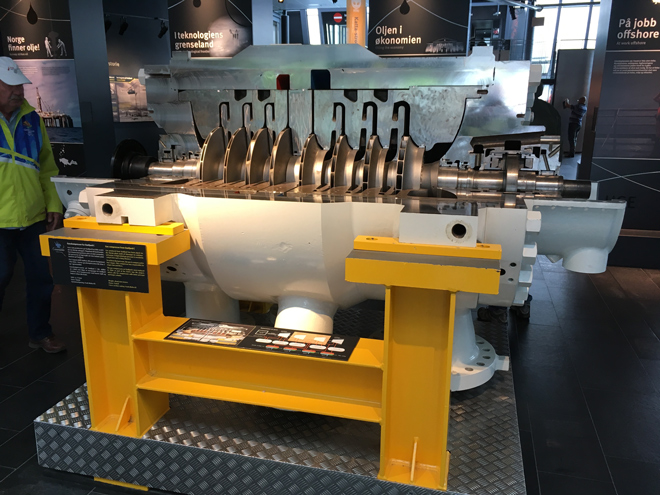
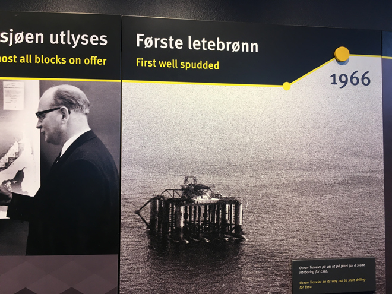
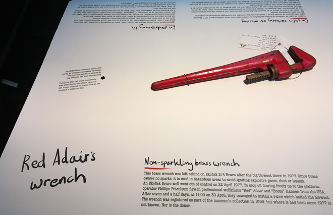
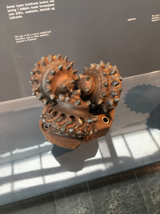
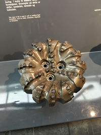
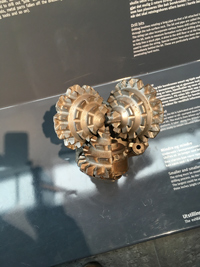
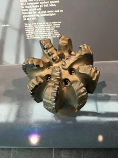
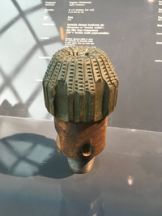
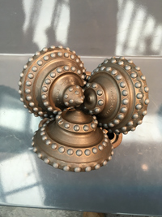
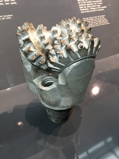
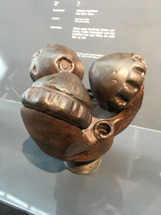
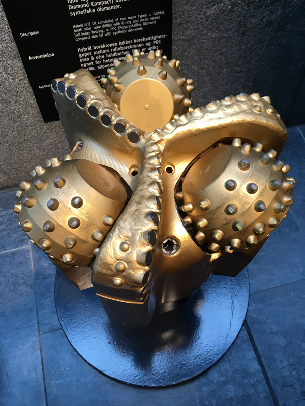
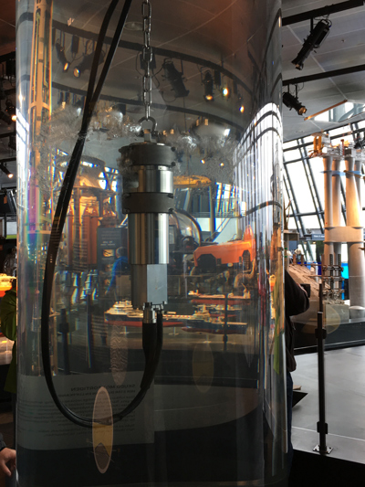
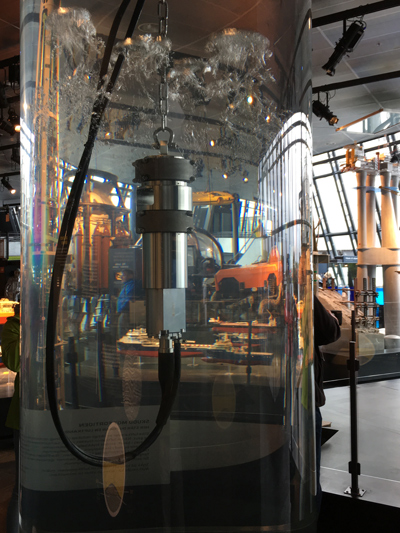
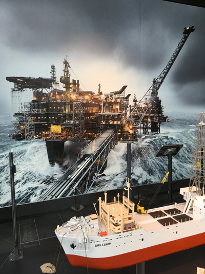
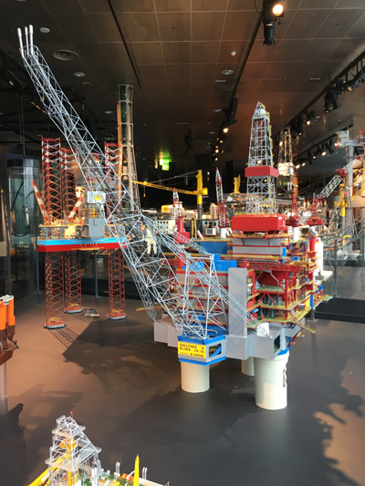
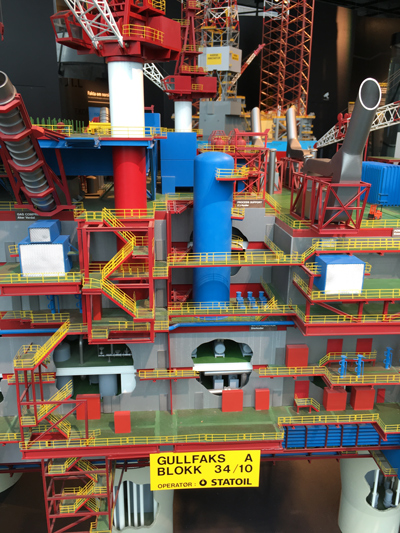
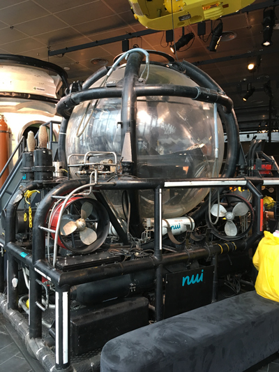
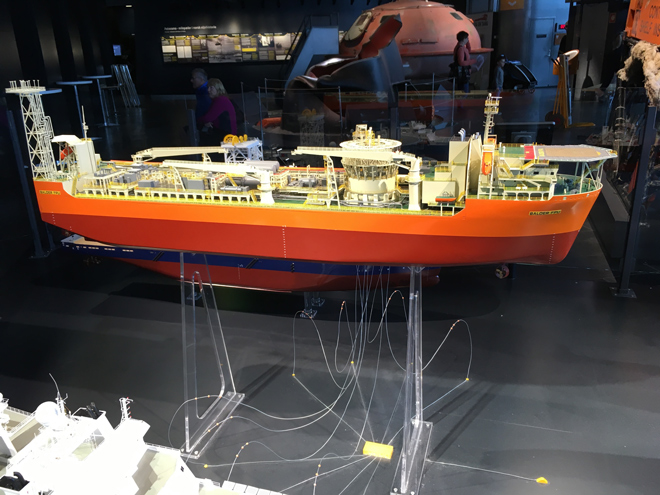
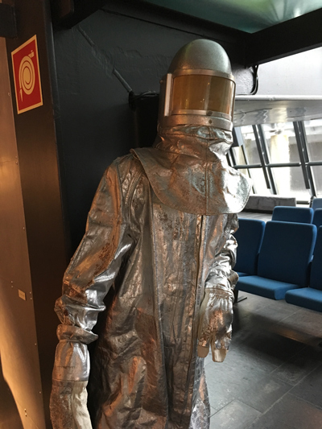
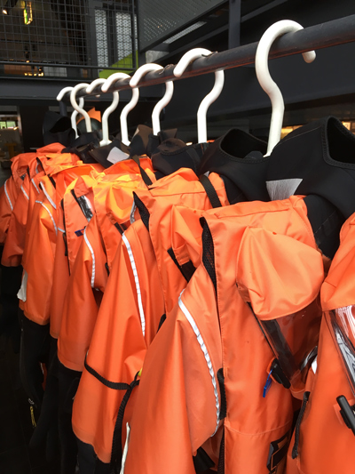
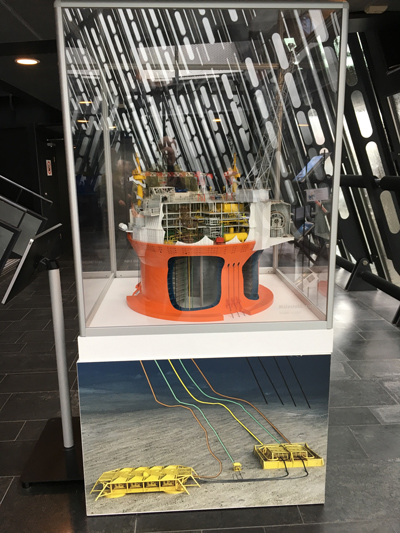
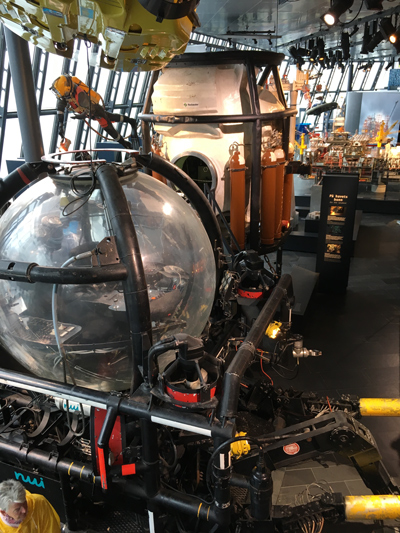
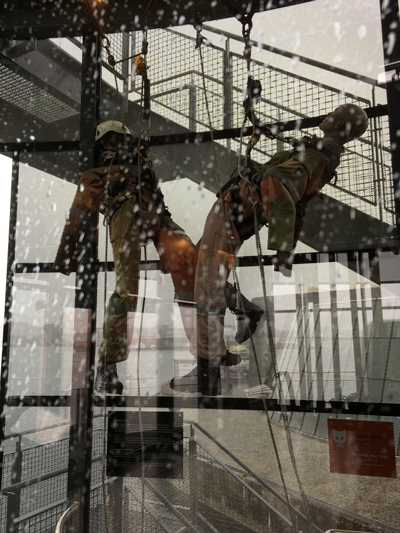
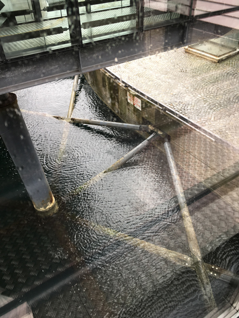
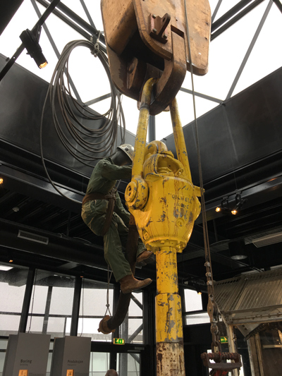
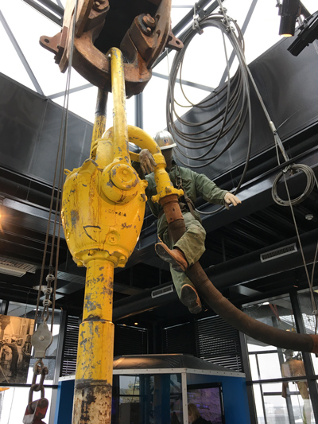
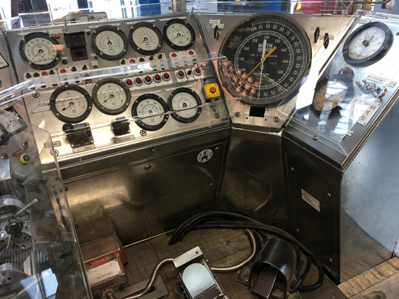
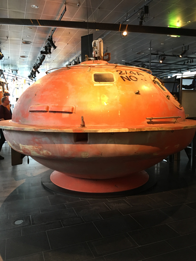
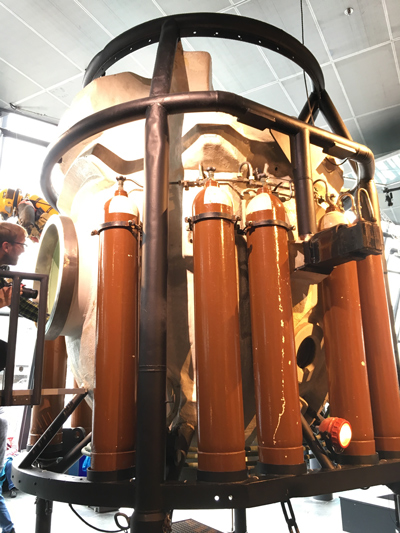
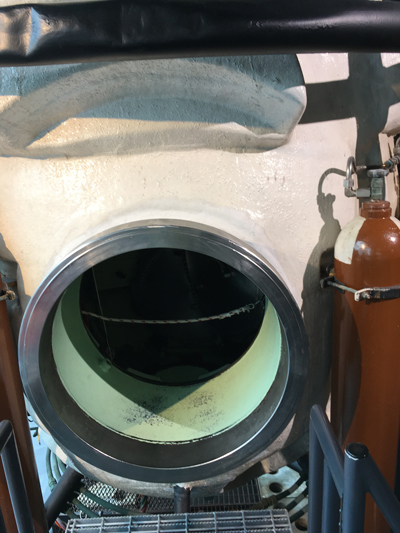
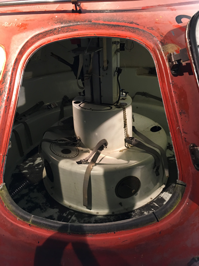